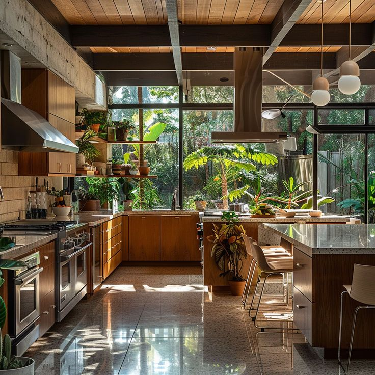
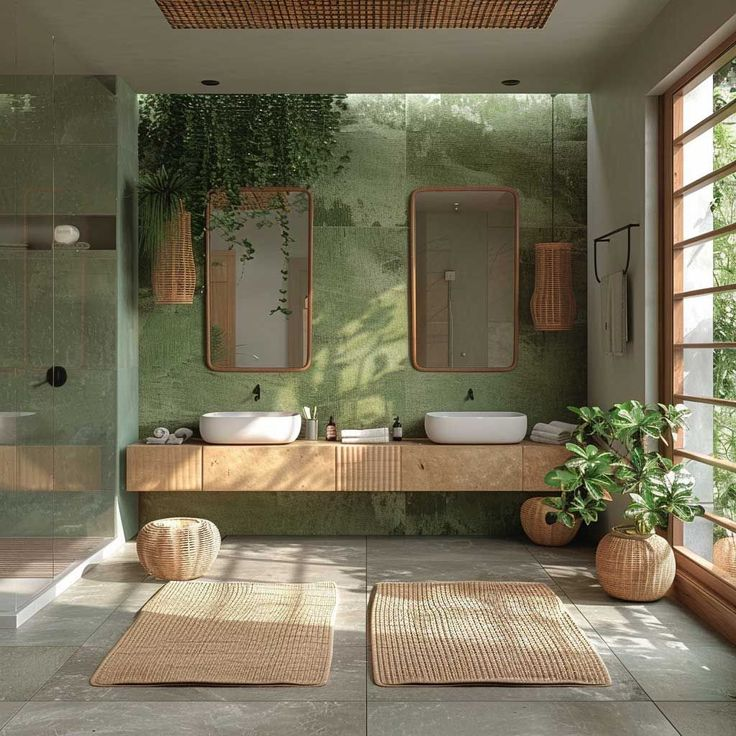
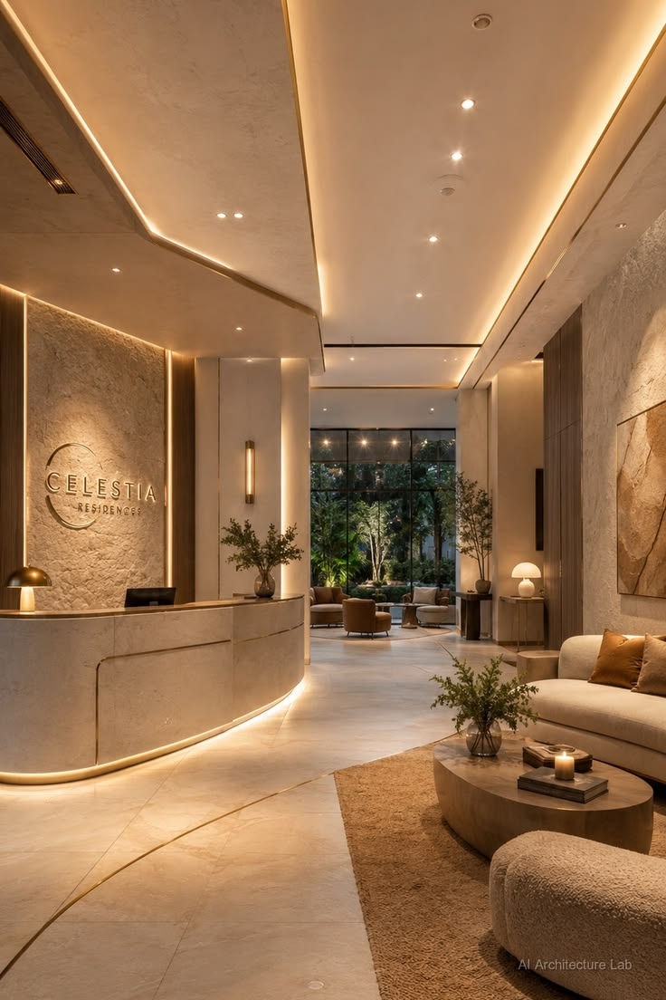

The Langford Loft
A closed-off kitchen opened to a glazed skylight and a canopy of trailing plants, with walnut cabinetry and honed stone counters keeping the palette calm underneath.
Johannesburg•2025

The Sanctuary Bath
A spa-like bathroom retreat with floor-to-ceiling marble, a freestanding soaking tub, and warm brass accents that soften the cool stone.
Cape Town • 2025

The Green Quarter
A biophilic corporate hub where living walls, natural light, and organic forms create a workspace that inspires creativity and well-being.
Johannesburg • 2025

The Terrace Lounge
A boutique hotel lobby transformed with rich textures, statement lighting, and curated local artwork that captures the energy of the city.